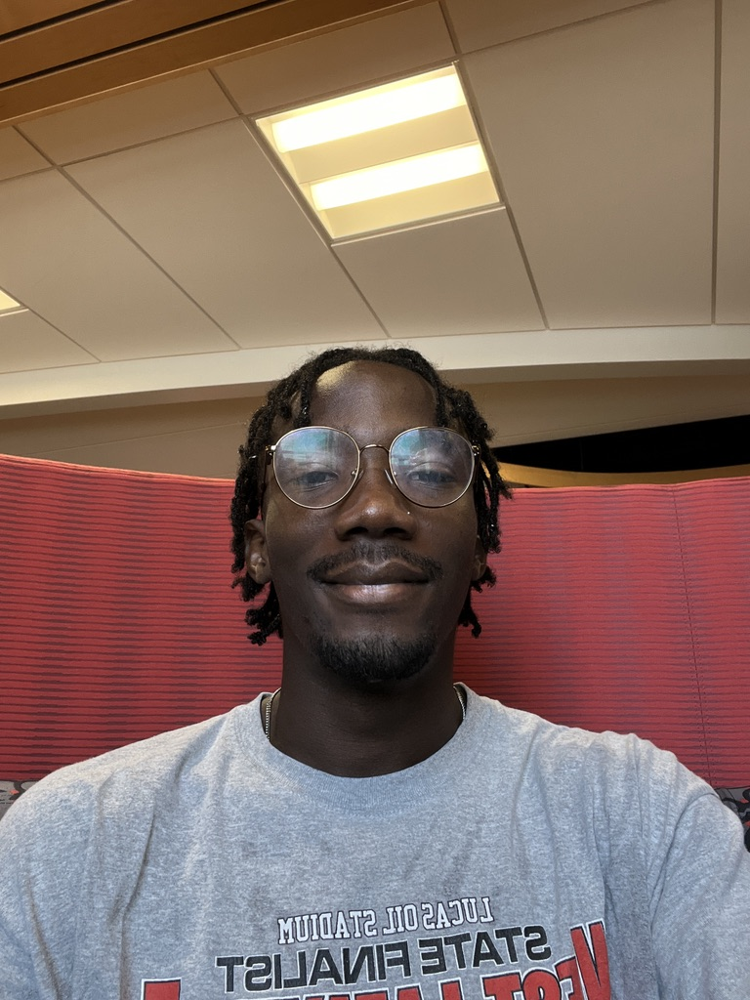
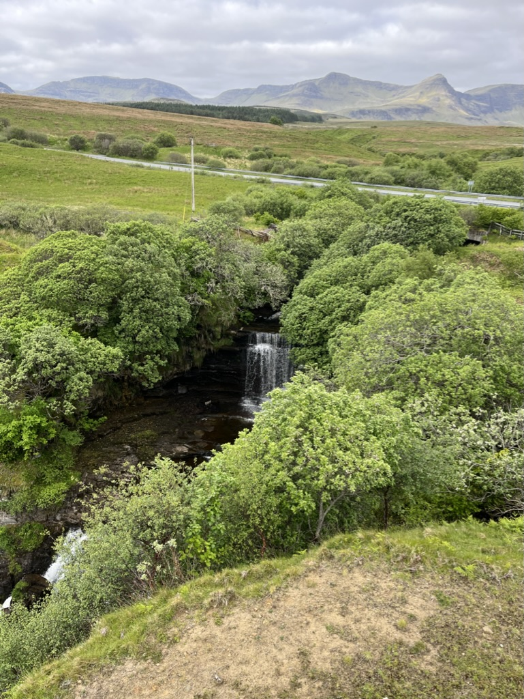
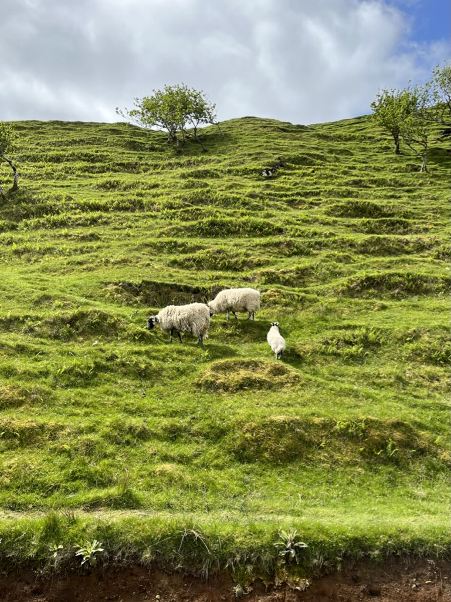

Nice to meet you
Hi, I’m Ayo

My full name is Ayomikun, which means “my joy is full.” That joy shows up in the work I do, designing products that make people’s lives a little easier, and in the quieter habit of being in nature with my phone taking pictures as you scroll through.
Creativity has always been part of me. I went from dreaming of becoming a chef, to exploring software development, to finding my path in UX design. Along the way I landed in West Lafayette, Indiana, we love corn out here.
I enjoy experiencing and taking pictures of nature. One of them is Scotland. I came home with a full camera roll and the itch to go again, especially the food.




Away from the screen you’ll usually find me playing soccer, jogging, trying to be a fashion icon, hiking nature trails, listening to music, practicing calisthenics, hanging out with friends, and watching anime.
Here’s my watched list
-

Kuroko’s Basketball